Calculations
To perform the calculations, select the Calculations Tab.
Description of terms and formulas used in qPCR calculations within ProntoPCR.
| Term | ProntoPCR Alias | Formula/Explanation |
|---|---|---|
| Housekeeper Average | mean_hk | = Mean(Housekeeper Gene 1, Housekeeper Gene n) |
| ΔCq (Delta Cq) | dcq_gene | = Cq (Gene of Interest) - Cq (Housekeeper Average) |
| 2^-(ΔCq) (Relative Fold Change) | fc_dcq_gene | = 2^-(ΔCq) |
| ΔCq Control Average | dcq_ctrl_avg | The average ΔCq value for the control group for the selected gene. Used for ΔΔCq calculations |
| ΔΔCq (Delta Delta Cq) | ddcq_gene | = ΔCq (Gene of Interest) - ΔCq (Control Average) |
| 2^-(ΔΔCq) (Fold Change) | fc_ddcq_gene | = 2^-(ΔΔCq) |
Average of Housekeeper Genes
The average of housekeeper genes is calculated within the 2^-(ΔCq) tab. The user can select the housekeeper genes to be used in the calculation. The average of the selected housekeeper genes will be calculated and displayed in the mean_hk column. The 2^-ΔCq calculations will auto populate with the data from the Input Data Tab. The 2^ΔΔCq requires the user to specify a few more inputs before the calculations can be performed. For both calculations, the average of the housekeeper genes will automatically be calculated using arithmetic mean. E.g. the mean_hk for sample1_1_F is calculated as follows:
\[ \begin{aligned} \text{mean}_{\text{hk}} &= \frac{29.0352 + 20.6732 + 23.1307}{3} \\ &= 24.2797 \end{aligned} \]
Click to Expand
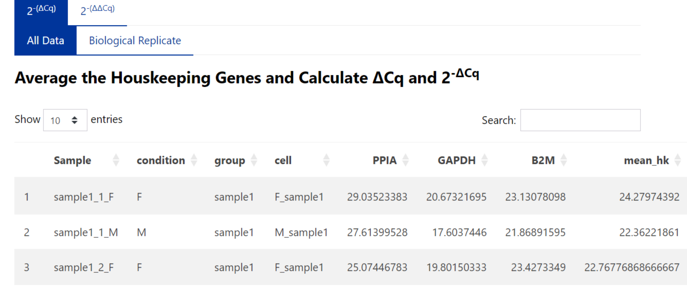To use geometric mean, select this option on the side panel:
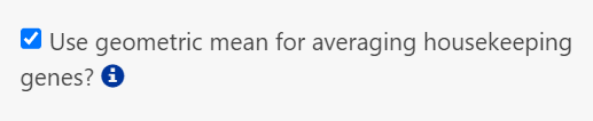
The geometric mean is calculated as follows for sample1_1_F:
\[ \begin{aligned} \text{Product} &= 29.0352 \times 20.6732 \times 23.1307 = 13{,}884.29033 \\ N_{\text{housekeepers}} &= 3 \\ \text{Geometric mean} &= \sqrt[3]{\text{Product}} = \sqrt[3]{13{,}884.29033} \\ &\approx 24.03483 \end{aligned} \]Click to Expand
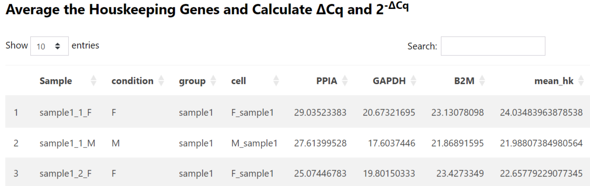2^-(ΔCq)
The ΔCq is calculated as follows:
ΔCq = Cq (gene of interest) – Cq (average of the housekeeping genes)
The ΔCq is displayed as dcq_geneName within the table on the right. E.g. for the gene IL6, the ΔCq (dcq_IL6) is calculated by:
\[ 25.3008457 – 24.0348396 = 1.2660060… \]
Click to Expand
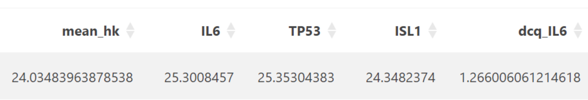Relative fold change (2^(- ΔCq)) is automatically calculated and given as fc_dcq_gene within the table. E.g. the relative fold change of IL6 (fc_dcq_IL6):
\[ = 2^{-1.266006} =0.415809 \]
Click to Expand
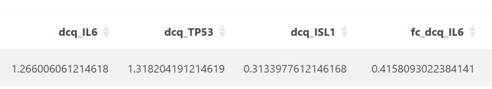To save the relative fold change data, press the download processed data button:
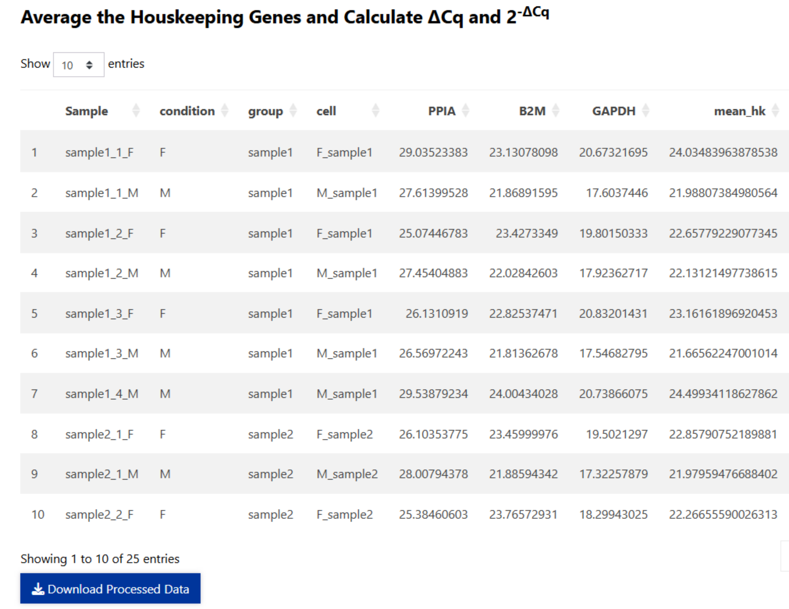
To save biological replicate average values from the 2^(- ΔCq) method, select the Biological Replicate tab and press the ‘Download Replicate Average Data’ Button:
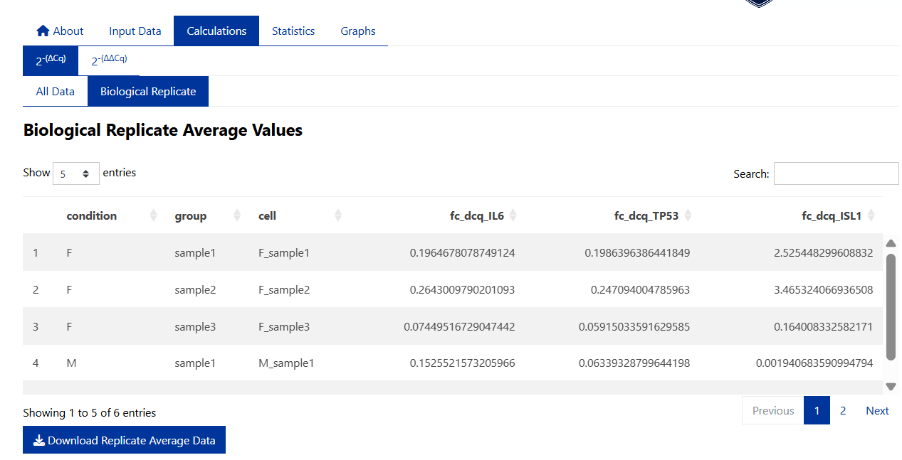
2^-(ΔΔCq)
The data for 2^-(ΔΔCq) calculations is not auto-populated.
Select the sample/group to be used as the control/reference sample. E.g. F_sample1:
Click to Expand
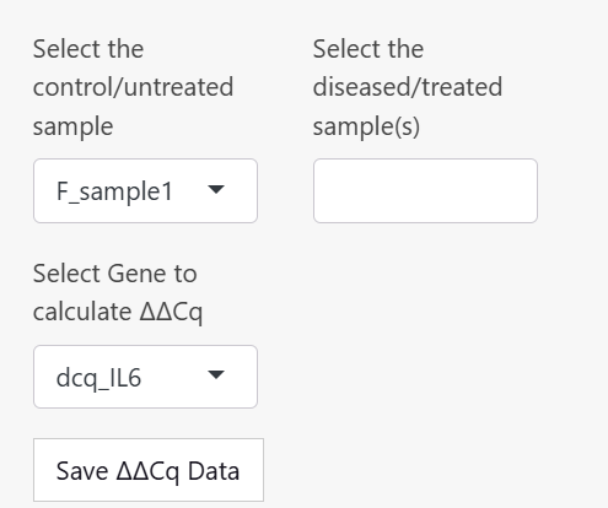Select the remaining groups, and the gene/target to perform the calculation on. Save the 2^(- ΔΔCq) data set within the ProntoPCR environment by pressing the ‘Save ΔΔCq Data’ button. It will appear light blue if it has been saved. This is important to do if performing statistics and/or graphing.
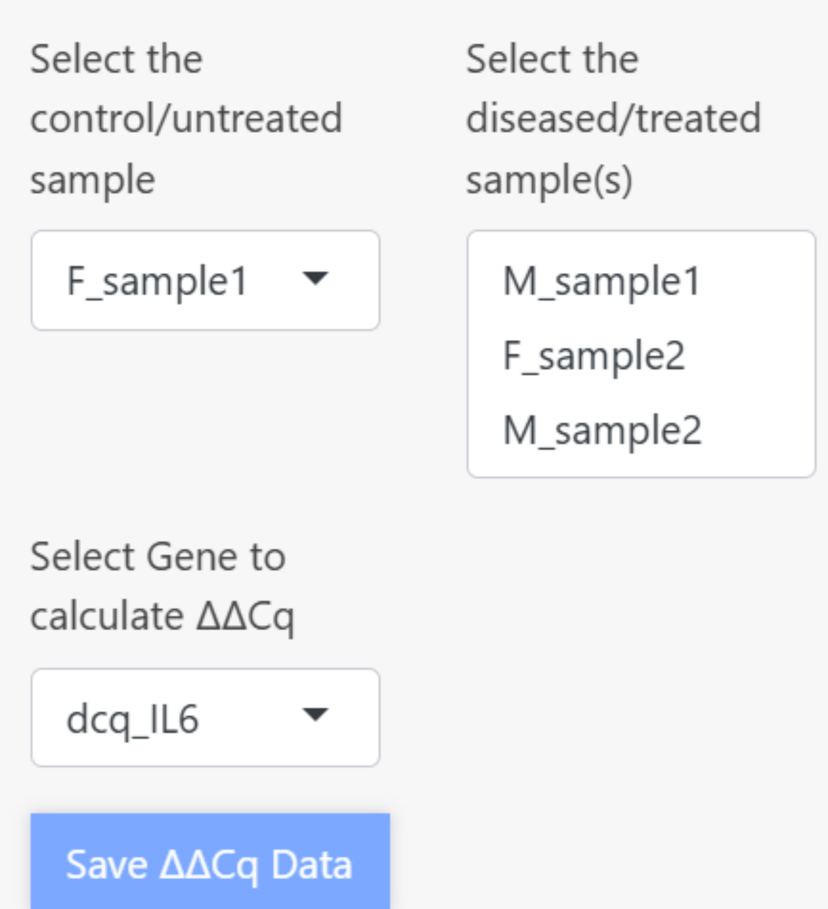
2^(- ΔΔCq) is calculated as follows:
Average the ΔCq values of the control group. This will appear as dcq_ctrl_avg, and the same number will be displayed down the column of the table. E.g. the dcq_ctrl_avg for the control sample (F_sample1) is calculated by:
\[ \begin{aligned} \text{dcq\_ctrl\_avg} &= \frac{1.266006 + 3.5411287 + 3.5114439}{3} \\ \text{dcq\_ctrl\_avg} &= 2.7728595 \end{aligned} \]
Click to Expand
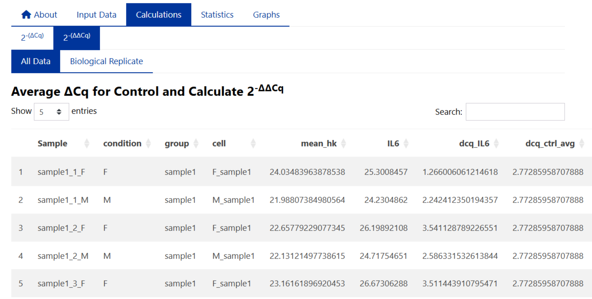Then ΔΔCq (ddcq) is performed by calculating the difference between the ΔCq of your gene of interest and the average of the control group (dcq_ctrl_avg):
∆∆Cq= ∆Cq (Gene of Interest)- ∆Cq (Control Group)
E.g. the ΔΔCq for IL6 and sample1_1_M is:
\[ \begin{aligned} \Delta\Delta Cq &= 2.24241235 - 2.77285958 \\ &= -0.5304472 \end{aligned} \]
Therefore the fold change (fc_ddcq) 2^(- ΔΔCq):
\[ \begin{aligned} 2^{-\Delta\Delta Cq} &= 2^{-(-0.5304472)} \\ &= 1.44437 \end{aligned} \]
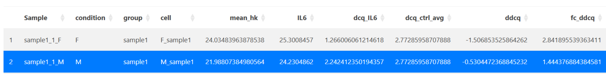
Press the ‘Download Processed Data’ Button to save the fold change data.
The biological replicate average data is displayed in the ‘Biological Replicate’ tab and can be saved using the ‘Download Replicate Data’ button.
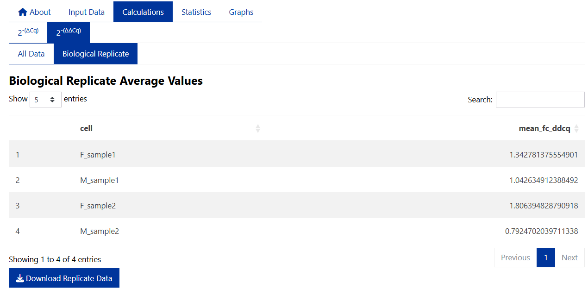